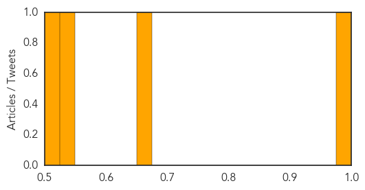
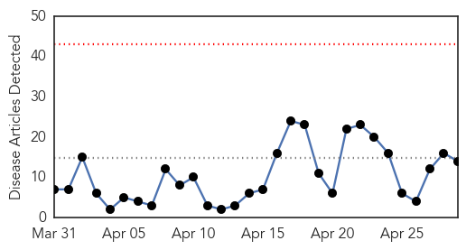
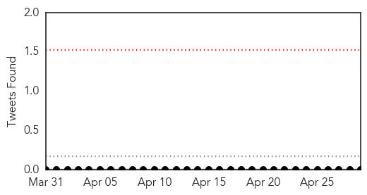
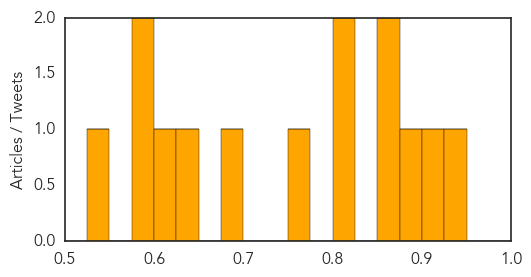

Dengue Fever
30-Day Web Trend
0 alerts, 0 warnings

30-Day Twitter Trend
0 alerts, 0 warnings

Article Locations

Article Confidences
Top Articles:
Top Tweets:
-
No tweets found for Apr 29, 2015
Measles
30-Day Web Trend
0 alerts, 0 warnings

30-Day Twitter Trend
0 alerts, 0 warnings

Article Locations

Article Confidences
Top Articles:
- 0.943
- Student's measles infection unlikely to cause outbreak
- 0.921
- Massachusetts reports first case of measles this year
- 0.888
- Maine Health Officials: Student Infected With Measles Visited Mall in Kittery
- 0.852
- PAHO/WHO office for Bahamas and TCI joins region in announcing elimination of Rubella
- 0.852
- Confirmed Measles Case With Travel to New Hampshire
- 0.808
- State investigating possible measles exposure in Portsmouth
- 0.806
- Portsmouth diners warned they may have been exposed to measles
- 0.775
- Maitland residents reminded to update measles vaccination
- 0.678
- NH Health Officials On the Lookout For Measles
- 0.633
- Officials: European Student with Measles Visited NH
- 0.612
- N.H. Health Officials Warn Of Possible Measles Exposure in Portsmouth
- 0.580
- State cautious that traveler with measles was in NH this month
- 0.579
- Radogno: Child health safety should be a priority
- 0.541
- Make Charitable Donations Online, Sponsor a Child, Charity Fundraising, Help Children, Help Communities
Top Tweets:
-
No tweets found for Apr 29, 2015